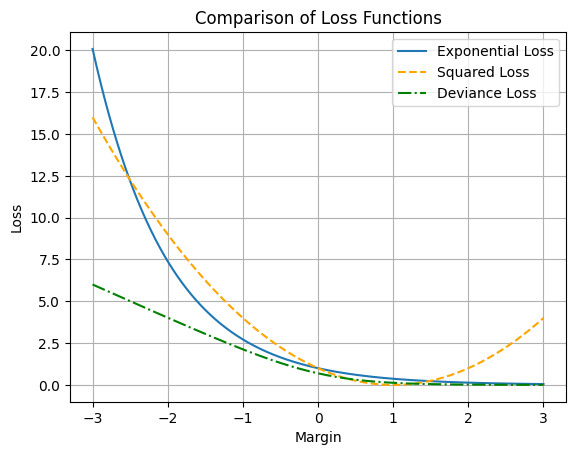

Understanding Boosted Decision Trees
Author: Juan Pablo Conejero Herrera
This article explains the key concepts of gradient-boosted decision trees, including common regularisation techniques. The appendix discusses the importance of selecting an appropriate loss function to achieve optimal performance.
The main source used in this article is The Elements of Statistical Learning by Hastie, Tibshirani, and Friedman (2009).
What are boosted decision trees?
Before defining what boosted decision trees are, it helps to clarify the notion of a weak classifier, that is, a model that performs only slightly better than random guessing. For instance, suppose we want to predict whether a stock index will rise next month. Then, provided monthly returns are positively correlated, a simple rule could be the following: if it rose last month, predict it will rise again; otherwise, predict it will fall. Such a rule is a weak classifier because it offers only marginal improvement over random guessing.
The key idea of boosting is that combining many weak classifiers can yield a far more accurate model than relying on a single “strong” learner. Each new weak learner is trained to correct the mistakes of the previous ones, progressively focusing on harder cases and thereby reducing bias. Moreover, by aggregating the predictions of many learners, boosting produces a more stable model that is less sensitive to noise in the training data.
Formally, boosting builds an additive model in which predictions are the sum of many weak learners. A boosted decision tree can be written as
\[\begin{equation} f_M(x)=\sum_{m=1}^{M}T(x;\Theta_m) \tag{1} \end{equation}\]where $T(x;\Theta_m)$ denotes the prediction from the $m$-th decision tree with parameters $\Theta_m$, and $M$ is the total number of trees in the ensemble.
Training Boosted Trees: The Forward Stagewise Approach
The optimal parameters in the previous equation, $\hat{\Theta}_m$, can be estimated by minimising a loss function as
\[\begin{equation} \hat{\Theta}_m = \underset{\Theta_m}{\operatorname{arg min}} \sum_{i=1}^N L\left(y_i,\sum_{m=1}^{M}T(x_i;\Theta_m)\right) \tag{2} \end{equation}\]That is, the optimal parameters for the decision tree $m$ are those that minimise the loss function for observations $i=1,…,N$.
The expression above implies that to obtain the optimal parameters for decision tree $m$, we should consider the effect of $\Theta_m$ on the loss of the other trees which can be computationally intensive. In practice, a forward stagewise approach is followed and the optimal parameters for tree $m$ are estimated by considering as given the trees trained before $m$, that is the boosted tree $f_{m-1}$, and ignoring how the choice of $\Theta_m$ might affect future trees:
\[\begin{equation} \hat{\Theta}_m = \underset{\Theta_m}{\operatorname{arg min}} \sum_{i=1}^N L\left(y_i,f_{m-1}(x_i)+ T(x_i;\Theta_m)\right) \tag{3} \end{equation}\]Although solving the optimisation problem in equation (3) is simpler than in equation (2), it is still a complex problem since it involves determining both the optimal regions and their corresponding predictions. Depending on the loss function chosen, the problem can simplify considerably. For example, when an exponential loss function is considered, resulting in the AdaBoost algorithm, the optimisation simplifies into recursive weight updates that can be expressed in closed form. However, when more general loss functions are considered, the solution involves numerical optimisation that requires more computational effort. In these cases, approximations become necessary. This is what we will cover in the next section.
Using gradient to speed up training
When the loss criterion is differentiable, its gradient provides valuable information about the direction of steepest descent, which we can exploit to guide the optimisation process more efficiently. Recall from equation (3) that in the forward stagewise approach, each tree $m$ is trained by choosing the parameters $\Theta_m$ that minimise the loss given the ensemble trained up to step $m-1$.
Let $g_m$ denote the gradient of the loss evaluated at the current model $f_{m-1}$, with components
\[\begin{equation} g_{im} = \left[\frac{\delta L(y_i, f(x_i))}{\delta f(x_i)} \right]_{f(x_i)=f_{m-1}(x_i)} \tag{4} \end{equation}\]A naive gradient-descent update would be
\[\begin{equation} f_m=f_{m-1}-\rho_m g_m \tag{5} \end{equation}\]where $\rho_m$ is the learning rate. This update moves predictions in the direction that most reduces the loss, and with enough iterations it would converge to the minimiser. However, two issues arise. First, tree outputs are constrained since all observations within the same region of a tree must share the same prediction. This means the model cannot in general reproduce the exact gradient vector. Second, directly following the gradient would lead to overfitting, since the model would chase individual training points rather than patterns that generalise.
A practical solution is to induce a new tree whose output is as close as possible to the (-) gradient. Specifically, for tree $m$ we would solve
\[\begin{equation} \hat{\Theta}_m = \underset{\Theta_m}{\operatorname{arg min}} \sum_{i=1}^N \left(-g_{im} - T(x_i;\Theta_m)\right)^2 \tag{6} \end{equation}\]In this way, the new tree approximates the gradient while respecting the structural constraints of decision trees. Because the tree partitions the space into regions, all points within a region share the same update, preventing the model from perfectly following the gradient of each observation. This introduces regularisation and reduces overfitting. Notice that it is important to keep trees shallow. If a tree were grown deep enough to give each observation its own leaf, the update would mimic the raw gradient, eliminating the regularising effect and likely causing overfitting.
Avoiding overfitting
So far, we have focused on how boosted trees are trained. However, no matter how powerful a model looks on paper, it will not perform well unless it is trained properly. A central challenge is avoiding one of the most common pitfalls in machine learning: overfitting.
In short, overfitting occurs when the model learns patterns that are specific to the training set but not representative of the broader population. As a result, predictions on new data may be inaccurate, since they reflect not only genuine relationships but also noise or spurious patterns present only in the training data.
There are several common strategies to reduce overfitting in boosted trees:
- Train shallow trees. Limiting the depth of trees (i.e. the number of terminal nodes) ensures that only the most important patterns are captured. These dominant patterns are more likely to generalise to the whole population.
- Balance learning rate and number of trees. The number of trees ($M$) should be tuned in relation to the learning rate ($\rho_t$). Typically, a small learning rate combined with a relatively large number of trees yields better generalisation.
- Use early stopping. After each new tree is added, the model’s performance can be evaluated on a validation set. If no improvement is observed for several iterations (e.g. 5), training is stopped to prevent overfitting.
- Subsample the training data. At each iteration, train the tree on a random subset of the observations (a method known as stochastic gradient boosting). For instance, using half of the training data per iteration reduces overfitting by introducing randomness and limiting the model’s ability to fit noise.
Conclusion
In conclusion, I would like to highlight the main strengths of gradient boosting decision trees (GBDTs). By exploiting the gradient of the loss function—something that is straightforward to compute for any differentiable function—GBDTs are typically efficient to train. At the same time, their predictive accuracy is among the highest within the family of decision tree–based methods.
A particularly influential variant is eXtreme Gradient Boosting (XGBoost), which extends GBDTs by incorporating second-order information about the loss function, among other things. XGBoost has become one of the most widely used machine learning methods, especially in competitive settings such as Kaggle.
Of course, achieving top performance requires careful regularisation. Preventing overfitting through techniques such as shallow trees, learning rate tuning, early stopping, and subsampling is essential to ensure that boosted models generalise well to new data.
Appendix: The choice of loss function matters
I included in this appendix two ideas which, although probably not as central as those discussed in the main body of the article, are still relevant for understanding boosted decision trees and achieving the best possible prediction accuracy.
Fact 1: The squared error is not a good choice in classification problems
In classification tasks, one of the key ideas behind boosting decision trees is the use of margin-based loss functions—that is, functions that depend on the product of the true label $y \in {-1, 1}$ and the predicted score $f(x)$. But why not use something more familiar, like the squared error $(y - f(x))^2$?
Reason 1: Squared error is not well suited for gradient-based methods
Boosting methods rely on computing derivatives of the loss with respect to the model’s prediction $f(x)$. If $f(x) \in {-1, 1}$, the gradient is either zero or undefined, offering no useful direction for improvement.
Even if $f(x)$ is treated as a continuous score (e.g. classification by thresholding its sign), squared error still performs poorly. It penalises confident but correct predictions—for example, if $y = 1$ and $f(x) = 2$, the loss is $(1 - 2)^2 = 1$, despite the prediction being correct with a large margin.
Reason 2: Squared error mishandles margins
In classification, we care not only about correctness but also about confidence. Suppose $y = 1$: predicting $f(x) = 2$ should be better than $f(x) = 0.1$, since the former has a larger margin. Similarly, an incorrect prediction with high confidence ($f(x) = -2$) should be penalised more than one with low confidence ($f(x) = -0.1$).
Squared error ignores this nuance. It penalises even correct predictions with large margins and fails to differentiate between confident and unconfident mistakes.
By contrast, the exponential loss:
\[\exp(-y f(x))\]increases sharply for confident but incorrect predictions and decreases rapidly for correct predictions with larger margins. This behaviour aligns with the goals of classification: reward correct confidence, penalise confident errors.
The figure below illustrates how exponential and squared error losses vary with the margin.
Fact 2: Choose your loss function carefully
Given these desirable properties, should we always use exponential loss? Not necessarily.
In the figure below, both exponential loss and deviance loss are plotted against the margin. For positive margins (i.e. correct predictions), they behave similarly. But for negative margins they diverge: an observation misclassified with a margin of -3 receives a loss three times higher under exponential loss than under deviance loss.
At first glance, this seems beneficial—we want to discourage highly confident misclassifications. However, consider cases where the observation is mislabeled or is simply an outlier unlikely to reappear in the data. In such situations, exponential loss may place excessive emphasis on correcting this anomaly, pushing the model to capture noise rather than meaningful patterns.
For this reason, if there is reason to suspect the data may contain wrong labels or outliers, it is often preferable to use deviance loss (or a similar function) instead of exponential loss.
